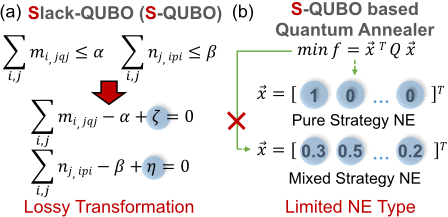
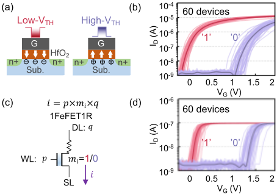
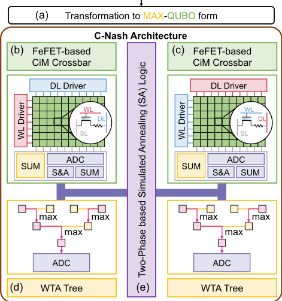
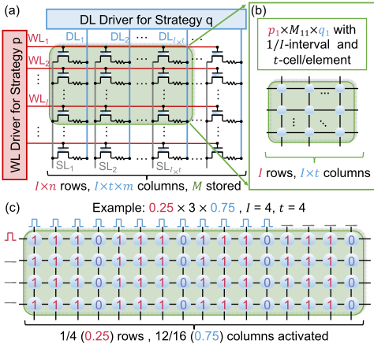
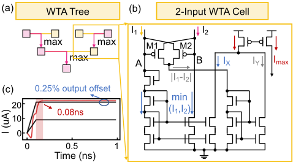
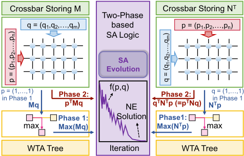
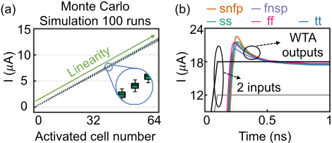
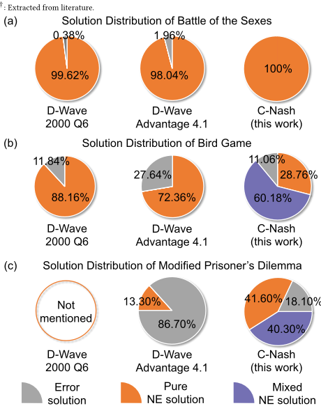
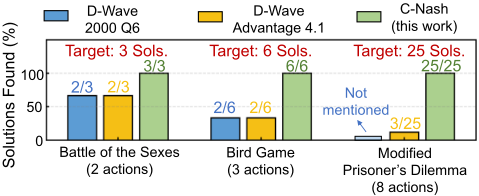
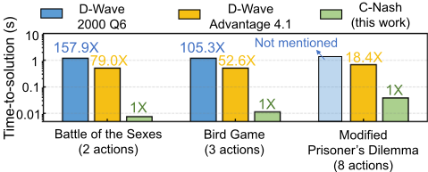

C-Nash：一种用于求解混合策略纳什均衡的新型铁电存内计算（CiM）架构
论文针对博弈论中纳什均衡（NE）求解这一 NP-complete 问题：现有基于 S-QUBO 变换的 D-Wave 量子求解器因引入 slack 变量改变目标函数而可能给出错误解，且只能找到二值的纯策略NE、无法处理十进制概率的混合策略NE。作者提出 C-Nash——首个面向混合策略NE的铁电存内计算架构：以无损的 MAX-QUBO 变换替代有损的 S-QUBO，用 1FeFET1R 双交叉阵列（bi-crossbar）存储 payoff 矩阵并加速 VMV 乘法，配合电流域 WTA 树实现 MAX 运算，由两阶段模拟退火（SA）逻辑迭代搜索。在三个博弈实例上，C-Nash 成功率最高较 D-Wave Advantage 4.1 提升 68.6%，能找到全部纯与混合NE解，time-to-solutions 最多降低 157.9X/79.0X。验证基于 Cadence SPECTRE 与 TSMC 28nm 模型的电路仿真，属器件-电路-算法协同设计研究，与本团队的内存接口 IP 与数字设计验证流程无直接交集。
验证纳什均衡（NE）的存在性是 NP-complete 问题。现有基于 S-QUBO 变换的 D-Wave 量子求解器在二次优化中引入松弛变量（slack terms），改变了原目标函数，可能导致错误解；且只能识别纯策略NE（二值解），无法处理混合策略NE（十进制概率解），导致大量NE解未被发现。此外 D-Wave 退火机需要昂贵的低温冷却且变量间连接受限。
提出 C-Nash 铁电存内计算架构，包含：(i) 将二次优化无损转换为 MAX-QUBO 形式，把两个不等式约束转为等式，不引入额外 slack 变量，避免目标函数被改变；(ii) 基于 1FeFET1R 结构的 FeFET bi-crossbar 存储 payoff 矩阵 M/N，策略向量 p/q 编码为 WL/DL 驱动电压，利用阵列电流求和并行完成 QUBO 核心的 vector-matrix-vector（VMV）乘法，其中混合策略概率量化为 I 个区间、矩阵元素用 t 个 cell 表示；(iii) 电流域 winner-takes-all（WTA）树（基于高摆幅自偏置共源共栅电流镜）实现 max(Mq) 与 max(N^T p)；(iv) 两阶段 SA 逻辑在 Phase 1 计算 MAX 项、Phase 2 计算 p^T(M+N)q，按退火温度概率接受新策略对，迭代搜索NE解。
求解成功率：'Battle of the Sexes'（2 actions）达 100%，'Bird Game'（3 actions）88.94%，'Modified Prisoner's Dilemma'（8 actions）81.90%；相比 D-Wave Advantage 4.1 成功率最高提升 68.6%（后者在 8-action 游戏上仅 13.3%）
解的完整性：以 Nashpy 为 ground truth，C-Nash 在三个博弈上找到全部纯策略与混合策略NE解，而两个 D-Wave 求解器只能找到部分纯策略解、无法找到混合策略解
time-to-solutions 相比 D-Wave 2000 Q6 降低 105.3–157.9X，相比 D-Wave Advantage 4.1 降低 18.4–79.0X
WTA 单元延迟 0.08ns、输出失调 0.25%；64×64 crossbar 在 FeFET VTH σ=40mV 与 8% 电阻 variability 下经 100 次 Monte Carlo 仿真保持良好线性，WTA 在 ss/snfp/fnsp/ff/tt 各工艺角下功能正常
实验条件：Cadence SPECTRE 仿真 + Preisach FeFET 模型 + TSMC 28nm TT corner（27°C），寄生参数提取自 DESTINY；时间结果基于 FeFET crossbar 阵列工作频率、按 1-bit/1-bit 精度推算；每个实例执行 5000 次 SA run（迭代数分别为 10000/15000/50000）
据论文所述是首个面向混合策略NE求解的铁电 CiM 架构。与已有工作的区别：(1) 用无损 MAX-QUBO 变换替代有损 S-QUBO，不引入 slack 变量、保持目标函数完整性，避免 'fake' 最优解；(2) 利用 FeFET 三端器件与 1FeFET1R 结构在交叉阵列中直接支持十进制概率的 VMV 乘法，同时覆盖纯策略与混合策略NE，而 D-Wave 量子退火器只能处理二值纯策略NE；(3) 以电流域 WTA 树硬件化 MAX 运算并与两阶段 SA 流程融合。
相关度级别：low
命中能力域：无明显对应
理由：论文属于新型器件（FeFET）—模拟/混合信号电路（crossbar、WTA 电流镜）—算法（MAX-QUBO、SA）协同设计的存内计算加速器研究，面向博弈论优化问题。其内容不涉及本团队七个能力域中的任何核心技术：既非 LPDDR/HBM/UCIe 等内存/互连接口 IP 的架构设计（2.1），无可综合 RTL、综合时序或低功耗流程（2.2/2.3），也无 UVM/覆盖率/仿真加速/Emulation（2.4/2.6）或形式验证（2.5），更不涉及验证自动化与 LLM 辅助（2.7）。虽然使用了 NVM 阵列与 28nm 工艺，但设计形态是模拟计算阵列而非数字 IP 交付流程，因此判定为 low、无明显对应域。对团队的价值仅限于技术雷达层面跟踪存算一体与新型非易失器件趋势。
建议动作：仅了解结论
arXiv:2408.04169v1 [cs.ET] 2024年8月8日
C-Nash：一种用于求解混合策略纳什均衡的新型铁电存内计算（Computing-In-Memory, CIM）架构
Yu Qian 1，Kai Ni 2，Thomas Kämpfe 3，Cheng Zhuo 1, 4 ∗ 与 Xunzhao Yin 1, 4 ∗
1 浙江大学，中国杭州；2 圣母大学，美国诺特丹；3 弗劳恩霍夫IPMS，德国德累斯顿
4 浙江省CS&AUS重点实验室，中国杭州；∗ 通讯作者邮箱：{czhuo, xzyin1}@zju.edu.cn
纳什均衡（Nash equilibrium, NE）的概念在博弈论中举足轻重，已在众多行业中受到广泛关注。然而，验证NE的存在性是一项重大的计算挑战，被归类为NP完全（NP-complete）问题。近期的研究进展提出了若干量子纳什求解器，旨在通过在目标函数中引入松弛项（slack terms）来识别纯策略NE解（即二值解），这种方法通常被称为松弛-二次无约束二值优化（slack-quadratic unconstrained binary optimization, S-QUBO）。然而，将松弛项引入二次优化会导致目标函数发生变化，从而可能产生错误的解。此外，这些量子求解器仅能识别纯策略NE解的一个有限子集，无法处理混合策略NE（即十进制解），导致许多解未被发掘。在本工作中，我们提出了C-Nash，一种新型铁电存内计算（computing-in-memory, CiM）架构，能够高效地处理纯策略和混合策略NE解。所提出的架构包括：(i) 一种转换方法，可将二次优化转换为MAX-QUBO形式而无需引入额外的松弛变量，从而避免目标函数发生变化；(ii) 一种基于铁电场效应晶体管（ferroelectric FET, FeFET）的双交叉阵列（bi-crossbar）结构，用于存储收益矩阵并加速QUBO形式的核心向量-矩阵-向量（vector-matrix-vector, VMV）乘法；(iii) 一个实现MAX形式的胜者全取（winner-takes-all, WTA）树，以及用于搜索NE解的基于两阶段的模拟退火（simulated annealing, SA）逻辑。评估结果表明，与基于D-Wave的量子方法相比，C-Nash在识别NE解方面的成功率提升高达68.6%，能够找到所有纯策略和混合策略NE解，而不仅仅是部分纯策略NE解。此外，与D-Wave 2000 Q6和D-Wave Advantage 4.1相比，C-Nash的求解时间（time-to-solutions）分别减少高达157.9倍/79.0倍。
博弈论（Game theory）在工业与商业的各类应用中取得了显著成功 [1, 2]。纳什均衡（Nash equilibrium, NE）作为博弈论中的一个基本概念，已在多个领域获得了广泛关注 [3, 4]，其在著名的“囚徒困境”问题中的应用便是典型例证 [5]。NE 刻画了涉及多个参与者的决策问题的稳定解。每个参与者拥有一个有限的动作集合，旨在寻找一种最优策略来选择动作，以最大化其个体收益。在均衡状态下，每个参与者均采取一种策略，使得
允许免费制作本作品全部或部分的数字或硬拷贝副本以供个人或课堂使用，前提是这些副本并非为牟利或获取商业优势而制作或分发，且副本在首页带有本声明及完整的引用信息。本作品中归作者以外的他人所有的组件之版权必须予以尊重。允许在注明出处的情况下进行摘录。若要以其他方式复制、再版、上传至服务器或重新分发至列表，则需要事先获得特定许可和/或支付费用。如需申请许可，请联系 permissions@acm.org。
DAC '24，2024年6月23-27日，美国加利福尼亚州旧金山
© 2024 版权归所有者/作者所有。出版权授权予 ACM。ACM ISBN 979-8-4007-0601-1/24/06...$15.00 https://doi.org/10.1145/3649329.3655988

任何参与者都无法通过单方面改变其所选策略来提高自身收益，这代表了一种稳定状态。NE 具有两种形式：（1）纯策略 NE，即参与者做出确定性选择，选定某一特定动作；（2）混合策略 NE，即参与者可以按照各自的概率选择多个动作。
本文提出 C-Nash，这是首个铁电存内计算（ferroelectric computing-in-memory, CiM）架构，旨在以高问题求解效率同时处理纯策略与混合策略 NE。本工作的主要贡献可总结如下：
验证纳什均衡（NE）的存在性已被证明是NP完全问题[6]，这使其位列NP领域内最复杂的计算难题之中。目前已提出多种NE求解器来寻找NE解。[7]提出了一种方法，将寻找博弈中NE的任务重新表述为一个二次优化问题。在此基础上，[8]引入了两种基于量子的NE求解器，通过将该问题进一步转化为二次无约束二值优化（QUBO）形式[9]来求解。然而，这种QUBO转换需要引入松弛项（slack terms），这会改变原始目标函数，从而可能导致错误的NE解。此外，[9]中的量子求解器只能识别纯策略NE解的一个子集（即二进制'0'或'1'值），而未处理混合策略NE解（即十进制值），因此仍有相当大一部分NE解未被发掘。这些挑战激励我们开发一种更通用、更高效的NE求解器。
评估结果表明，C-Nash不仅展现出卓越的成功率——与D-Wave Advantage 4.1相比，在发现NE解方面的成功率最高提升68.6%——而且能够成功识别所有NE解，而其他方法仅能找到部分纯策略NE解。此外，C-Nash消耗的时间成本极低，与D-Wave 2000 Q6和D-Wave Advantage 4.1相比，其求解时间（time-to-solutions）分别减少105.3-157.9倍/18.4-79.0倍。
在本节中，我们回顾NE、NE求解器、存内计算（CiM）以及铁电场效应晶体管（FeFET）器件的一些基础知识。
纳什均衡（NE）是非合作博弈中一个至关重要的解概念。它表示一种策略组合，在该组合下，任何参与者都没有动机单方面偏离其各自的策略选择。在双人博弈中，NE解包含参与者1和参与者2的一对策略 ( 𝑝 ∗ , 𝑞 ∗ )，使得参与者1和参与者2的期望收益函数 𝑓 1 和 𝑓 2 分别满足：
收益函数定义如下：
其中，𝑀 和 𝑁 是 𝑛 × 𝑚 矩阵，分别表示参与者1和参与者2的收益。𝑝 和 𝑞 分别是参与者1和参与者2的策略，即 𝑝 = ( 𝑝 1 , 𝑝 2 , ..., 𝑝 𝑛 ) ，𝑞 = ( 𝑞 1 , 𝑞 2 , ..., 𝑞 𝑚 ) ，且 𝑛 𝑖 𝑝 𝑖 = 1 ，𝑚 𝑗 𝑞 𝑗 = 1，其中 𝑝 𝑖 和 𝑞 𝑗 分别表示参与者1和参与者2选择行动 𝑖 和 𝑗 的概率。纯策略是指参与者确定性地做出选择的情形，即 𝑝 ∗ 和 𝑞 ∗ 均只包含一个非零元素。例如，𝑝 ∗ 1 = 1 意味着参与者1选择行动1作为其策略。相反，混合策略允许参与者以概率的方式选择其行动，即 𝑝 ∗ 和 𝑞 ∗ 包含多个小数元素。例如，策略 𝑝 ∗ 1 = 0 . 5 , 𝑝 ∗ 2 = 0 . 5 表示参与者1以50%的概率采取行动1，以50%的概率采取行动2。
A method is proposed in [6] to transform the state of NE (Eq. (1) and 2) into a quadratic optimization problem:
subject to

where 𝛼 and 𝛽 are scalars, 𝑒 and 𝑙 are 𝑛 × 1 and 𝑚 × 1 vectors of ones, respectively.
To find the NE solutions of Eq. (3) with the constraints in Eq. (4), several quantum-based NE solvers have been proposed [8, 9]. These solvers initially transform the problem into a QUBO formula and subsequently map it onto quantum annealers to search for NE solutions. The general QUBO form [10] is expressed as:
where 𝑥 ∈ { 0 , 1 } 𝑛 , and 𝑄 is an 𝑛 × 𝑛 matrix. By introducing slack variables, the quadratic optimization problem above can be transformed into QUBO formula:
The D-Wave quantum annealers are proposed for implementing S-QUBO [8]. However, as shown in Fig. 1(b), the annealer is limited to address pure strategy NE, i.e., only two states for each variable can be represented, i.e., 𝑥 𝑖 = 1 or 0, but unable to accommodate mixed strategy NE, which assigns decimal probability for the variables, i.e., 𝑥 𝑖 = 0 . 3. Meanwhile, practical D-Wave annealers require expensive cryogenic cooling and exhibit limited connectivity between variables, affecting capability in addressing complex and large-scale S-QUBO [11-13]. To tackle these challenges, we propose to leverage FeFET based CiM architecture to address both pure and mixed strategy NE with improved solving efficiency.
where 𝐴, 𝐵,𝐶, 𝐷 are constants. We refer to this transformation as Slack-QUBO (S-QUBO). As illustrated in Fig. 1(a), S-QUBO introduces slack variables 𝜁 and 𝜂 to equate inequalities. This lossy transformation changes the original constraints and results in potential deviations in optimal solutions. To address this problem, we propose a novel transformation method to losslessly convert the original constraints into an equality.
Pure / Mixed Nash Equilibrium Problem

在本节中，我们介绍 C-Nash，这是首个能够高效求解混合策略纳什均衡（NE）的铁电存内计算（CiM）架构。图 3 展示了所提出的 C-Nash 架构的总体概览。为了解决混合策略 NE 问题，C-Nash 没有采用像 S-QUBO 那样的有损转换（见第 2.2 节），而是将二次优化问题无损地变换为 MAX-QUBO 形式（见第 3.1 节），随后将其映射到基于铁电场效应晶体管（FeFET）的 CiM 双交叉阵列（bicrossbar）结构上（见第 3.2 节）。构建了一棵胜者全取（WTA）树（见第 3.3 节），以便按照基于两阶段的模拟退火（SA）流程（见第 3.4 节）促进对 MAX-QUBO 形式的迭代计算。

Unlike S-QUBO approach, our proposed transformation converts the two inequalities in Eq. (4) into two equations:
where 𝑀𝑞 and 𝑁 𝑇 𝑝 are product vectors with 𝑛 and 𝑚 elements, respectively. We then obtain the MAX-QUBO form as follows:
where 𝑖 𝑝 𝑖 = 1 and 𝑖 𝑞 𝑖 = 1 are satisfied by circuits.
Therefore, given a decision-making problem (payoff matrices 𝑀 and 𝑁 ) and its associated strategies from two players ( 𝑝 and 𝑞 ), the objective function can be divided into three components: 𝑝 𝑇 ( 𝑀 + 𝑁 ) 𝑞 , max ( 𝑀𝑞 ) , and max ( 𝑁 𝑇 𝑝 ) . Note that all three components involve matrix-vector (MV) or vector-matrix-vector (VMV) multiplications, which can be addressed perfectly by our proposed FeFET-based CiM design.
我们采用图2所示的1FeFET1R结构来构建存内计算（CiM）交叉阵列，如图3(a)/(b)所示。两种策略𝑝和𝑞均施加于交叉阵列的输入端，交叉阵列中存储着收益矩阵。

图4(a)描绘了𝑝 𝑇 𝑀𝑞在交叉阵列上的完整映射。收益矩阵𝑀存储于1FeFET1R单元中，输入策略𝑝和𝑞分别被编码为施加在WL和DL上的驱动电压。SL上求和后的输出电流有效地表示了乘积𝑝 𝑇 𝑀𝑞。该映射策略假设：(i) 每个1FeFET1R单元存储1比特，使用𝑡个单元来表示一个收益矩阵元素，且𝑡由矩阵元素的最大值决定；(ii) 在混合策略𝑝和𝑞中采取某一动作的概率被量化为𝐼个区间，即激活𝐼行/𝐼 × 𝑡列来表示{ 0 , 1 / 𝐼, 2 / 𝐼, ..., 1 }范围内的一个十进制数值。因此，实现(a)中𝑝 × 𝑀 × 𝑞以及(b)中𝑝 1 × 𝑀 11 × 𝑞 1的交叉阵列尺寸分别为( 𝐼 × 𝑛 ) × ( 𝐼 × 𝑡 × 𝑚 )和𝐼 × ( 𝐼 × 𝑡 )。
图4(c)展示了(b)的一个示例，假设𝑝 1 = 0 . 25，𝑀 11 = 3，𝑞 1 = 0 . 75，即乘法运算0 . 25 × 3 × 0 . 75，其中𝐼 = 4且𝑡 = 4。所需的交叉阵列尺寸为4 × 16。在水平方向上，四个相邻的单元表示元素3。总共4行中的1行（即0.25）和总共12列中的8列（即0.75）分别被激活。随后，测量表示该乘积的交叉阵列的累加电流，并将其量化为MAX-QUBO形式的结果。
在C-Nash中，我们构建了一个赢者通吃（WTA）树来实现MAX函数，即3.1节所述MAX-QUBO形式中的max ( 𝑀𝑞 )和max ( 𝑁 𝑇 𝑝 )，用于计算其目标函数。图5(a)展示了一个由三个2输入WTA单元组成的WTA树，用于获取四个输入中的最大值。一般地，对于𝐷个输入，即对于max ( 𝑀𝑞 )有𝐷 = 𝑛，对于max ( 𝑁 𝑇 𝑝 )有𝐷 = 𝑚，所需的WTA单元数量𝑁为𝑁 = 2 𝐾 - 1 + 2 𝐾 - 2 + ... + 2 0 = 2 𝐾 - 1，其中𝐾 = ⌈ log 2 𝐷 ⌉。
图5(b)展示了一个2输入WTA单元的电路原理图，该单元利用高摆幅自偏置共源共栅电流镜产生相等的电流，流经电压相等的节点A和B。当𝐼 1 > 𝐼 2时，交叉耦合PMOS对中M1的栅极电压变得高于M2的栅极电压，从而开启M2以传导“额外”电流𝐼 1 - 𝐼 2。若𝐼 2 > 𝐼 1，则M2的栅极电压升高，从而开启M1以传导“额外”电流𝐼 2 - 𝐼 1。随后，较小的输入电流和“额外”电流，即min ( 𝐼 1 , 𝐼 2 )和| 𝐼 1 - 𝐼 2 |，通过共源共栅电流镜被复制到𝐼 𝑋和𝐼 𝑌。因此，输出电流𝐼 max由下式给出：

图5(c)中的瞬态波形验证了2输入WTA单元的功能，其延迟为0.08ns，输出失调为0.25%。
上述双交叉阵列和WTA树用于在两阶段模拟退火（SA）过程中实现MAX-QUBO公式的一次迭代。图6描绘了该操作流程。
在阶段2中，双交叉阵列分别执行向量-矩阵-向量（VMV）乘法，即𝑝 𝑇 𝑀𝑞和𝑝 𝑇 𝑁𝑞，而WTA树则被停用。VMV乘法的输出被直接传输至基于两阶段的SA逻辑。通过加法和减法运算，在给定一对策略( 𝑝, 𝑞 )的条件下，目标函数式(9)的值被计算出来，作为退火过程的一次迭代结果。
在阶段1中，存储𝑀的交叉阵列中的输入向量𝑝，以及存储𝑁 𝑇的交叉阵列中的𝑞，均被配置为单位向量，其所有元素均置为1。因此，两个交叉阵列的输出即为矩阵-向量乘法所得的向量，分别为𝑀𝑞和𝑁 𝑇 𝑝。随后，这两个向量被送入电流域WTA树，以分别识别其中的最大元素max ( 𝑀𝑞 )和max ( 𝑁 𝑇 𝑝 )。这两个最大元素作为目标函数式(9)中的两项，被记录在基于两阶段的SA逻辑中以供进一步计算。
算法1展示了C-Nash中的SA过程。在每次SA迭代中，将上一次迭代的策略对的动作概率以interval的值随机增加或减少，以生成用于MAX-QUBO计算的新策略对( 𝑝 𝑛 , 𝑞 𝑛 )。在给定该策略对的情况下，计算目标函数的输出值，记为𝑓 𝑛。随后，SA逻辑将𝑓 𝑛与已记录的目标函数值𝑓 𝑐进行比较，并根据比较结果以及与退火温度相关的概率，更新所记录的策略对及相应的目标函数值𝑓 𝑐。
在本节中，我们验证了C-Nash的交叉阵列（crossbar）和赢者通吃（WTA）组件的鲁棒性，并针对[8]中的三个博弈评估了C-Nash的问题求解效率。所有仿真均使用Cadence SPECTRE进行，并采用了Preisach FeFET模型[27]。对于MOSFET，采用了具有TT
算法1 C-Nash求解混合策略纳什均衡的模拟退火
输入：1: 𝑝 = 𝑝 0 , 𝑞 = 𝑞 0 ⊲ 生成初始策略对 2: 𝑇 = 𝑇 𝑚𝑎𝑥 ⊲ 起始温度 输出：混合策略纳什均衡解。3: 𝑝 𝑐 = 𝑝 0 , 𝑞 𝑐 = 𝑞 0 4: 𝑓 𝑐 = 𝑓 ( 𝑝 𝑐 , 𝑞 𝑐 ) 5: while 𝑇 ≥ 𝑇 𝑚𝑖𝑛 do 6: 生成新的策略对 ( 𝑝 𝑛 , 𝑞 𝑛 ) 7: 𝑓 𝑛 = 𝑓 ( 𝑝 𝑛 , 𝑞 𝑛 ) 8: Δ 𝐸 = 𝑓 𝑛 - 𝑓 𝑐 9: if Δ 𝐸 ≤ 0 then 10: 𝑝 𝑐 = 𝑝 𝑛 , 𝑞 𝑐 = 𝑞 𝑛 ⊲ 接受新策略对 11: else 12: 以概率 𝑒 - Δ 𝐸 𝑇 接受 ( 𝑝 𝑛 , 𝑞 𝑛 ) 13: end if 14: 𝑇 = 𝐷 ( 𝑇 ) ⊲ 温度衰减 15: end while

工艺角的TSMC 28nm模型，温度为27 ◦ C。28nm工艺节点的连线寄生参数提取自DESTINY [28]。
The problem-solving efficiencies between C-Nash and two D-Wave quantum NE solvers [8] are evaluated, in terms of success rate, number of found solutions (pure or mixed) and average time to find solutions. The benchmark dataset comprises three instances [8], i.e., "Battle of the Sexes", "Bird Game", and "Modified Prisoner's Dilemma", each involving two, three, and eight actions, respectively. The target NE solutions of these games are obtained using Nashpy
| Nash Solver | Battle of the Sexes (2 actions) | Bird Game (3 actions) | Modified Prisoner's Dilemma (8 actions) |
|---|---|---|---|
| D-Wave 2000 Q6 † | 99.62 | 88.16 | - |
| D-Wave Advantage 4.1 † | 98.04 | 72.36 | 13.30 |
| C-Nash (this work) | 100 | 88.94 | 81.90 |
| Nash Solver | Battle of the Sexes (2 actions) | Bird Game (3 actions) | Modified Prisoner's Dilemma (8 actions) |
†

[31] as the ground truth. The instances are executed 5000 SA runs using C-Nash, with each run comprising 10000, 15000 and 50000 iterations, respectively. Time required for finding solutions is derived based on the operational frequency of FeFET crossbar arrays detailed in [29], scaling to a precision of 1-bit/1-bit.
Table 1 summarizes the success rate of finding an NE solution using three Nash solvers. The two D-Wave Nash solvers exhibit success rates exceeding 90% in addressing the relatively simple "Battle of the Sexes" game with two actions. Nevertheless, as the problem complexity increases, such as in the "Bird Game" with three actions, their success rates drop to 88.16% and 72.36%, respectively. The D-Wave Advantage 4.1 achieves a low success rate of 13.3% in more complex "Modified Prisoner's Dilemma", featuring eight actions. These results show that with increased problem complexity, conventional transformation method S-QUBO introduces more slack variables, thus leading to larger deviations in the object function, and degraded performance of Nash solvers. On the contrary, C-Nash achieves a remarkable 100% success rate in addressing the "Battle of the Sexes", and maintains higher success rates, i.e., 88.94% and 81.90% in the other two games. This is because that the proposed lossless MAX-QUBO conversion of C-Nash preserves the integrity of object function, eliminating the potential solution deviations.


Fig. 10 illustrates the average time for finding the solutions of the three Nash solvers. Compared to the other two D-Wave-based solvers, C-Nash consumes much less time for finding the solutions. This is due to two main factors: (i) The S-QUBO transformation of the two D-Wave based solvers deviates the objective function, resulting in potential "fake" optimal solution that minimizes the deviated objective function but is not the NE solution for original objective function. The integrity of the objective function in C-Nash prevents the "fake" optimal solution, thus requiring fewer SA runs to find all NE solutions. (ii) The core operations within an SA iteration, i.e., MV multiplication, are accelerated by the FeFET-based CiM bicrossbar structure, resulting in significant time savings. Therefore, C-Nash achieves a better time-to-solution.
我们考察所求得解的质量，具体包括：(i) 各纳什均衡（NE）求解器在所有模拟退火（SA）运行中识别出的 NE 解的分布，以及 (ii) 各求解器找到的不同解的数量。图 8(a)-(c) 分别比较了各 NE 求解器在“性别之战”（Battle of the Sexes）、“鸟类博弈”（Bird Game）和“改进囚徒困境”（Modified Prisoner's Dilemma）中找到的解的分布。可以看出，C-Nash 不仅能在所有博弈中识别出纯策略 NE 解，还能找到其他两种求解器无法找到的混合策略 NE 解。需要注意的是，各求解器在不同的 SA 运行中可能找到相同的解。图 9 表明，随着问题复杂度的增加，两种 D-Wave 求解器找到的不同解占目标（真实）解的比例逐渐减小，而 C-Nash 始终能发现所有可能的解。这是因为 C-Nash 利用无损 MAX-QUBO 变换来保持目标函数的完整性，并且通过利用铁电场效应晶体管（FeFET）支持 VMV 乘法，能够容纳含小数值的 MAX-QUBO 形式。
本文提出了 C-Nash，这是首个专为求解混合策略纳什均衡（NE）解而设计的铁电存内计算（CiM）架构。我们的工作提出了一种新颖的变换方法，能够将二次优化问题转换为 MAX-QUBO 形式，而不改变原始目标函数。利用 FeFET 的独特特性，我们引入了基于 FeFET 的双交叉阵列（bi-crossbar）来加速 MAX-QUBO 形式的 VMV 乘法，并引入了实现 MAX 函数的赢者通吃（WTA）树。迭代 MAX-QUBO 形式的计算由 SA 逻辑控制。评估结果表明，与其他 NE 求解器相比，C-Nash 具有显著优势，包括更高的 NE 解求解成功率、能够找到的解数量更多，以及求解所需的时间成本更低。
1 条证据未在原文中核对到